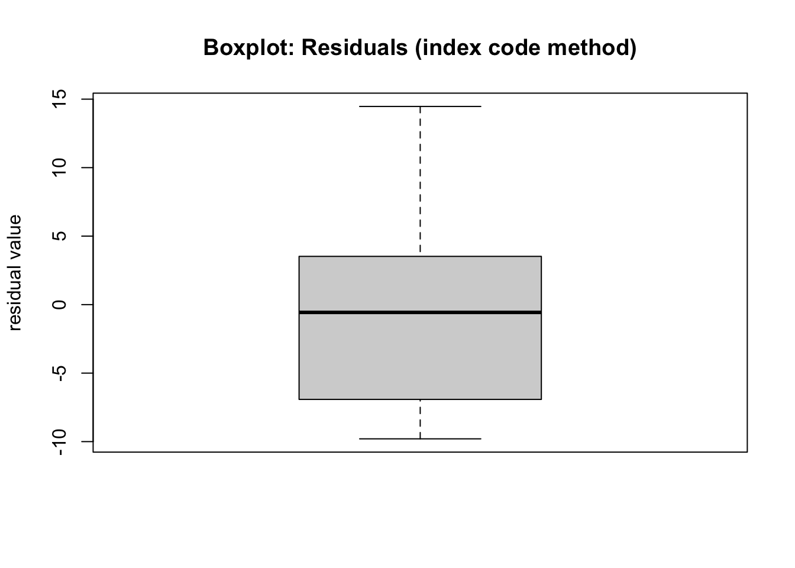
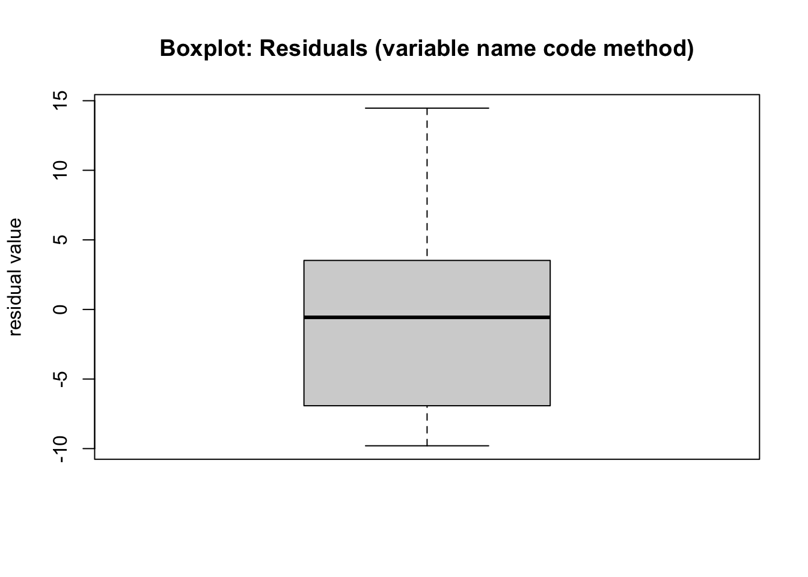
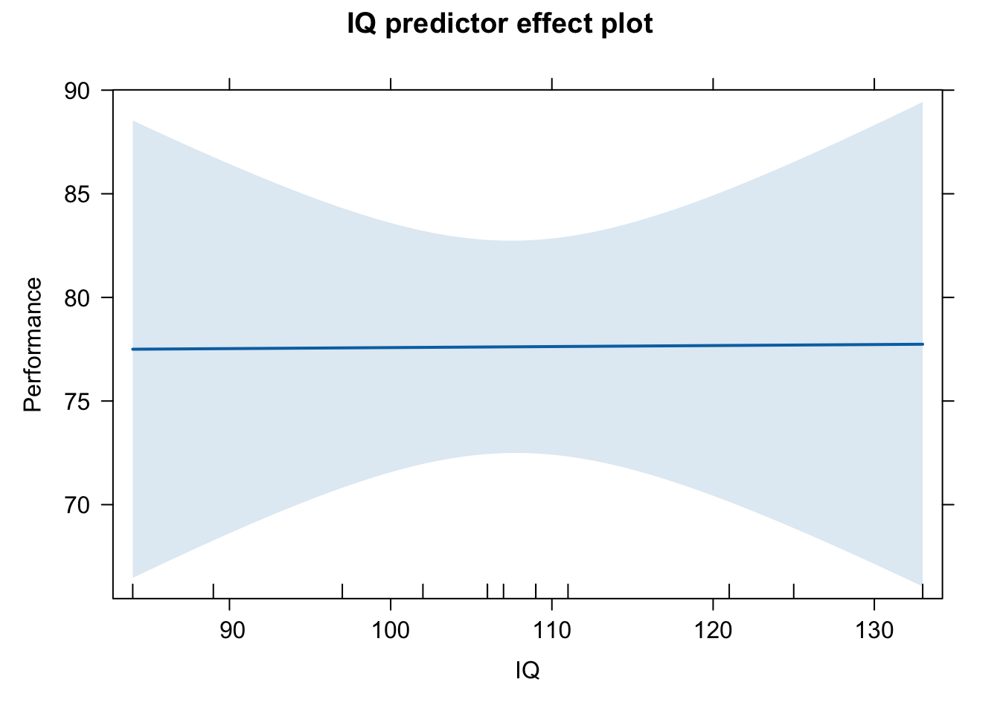
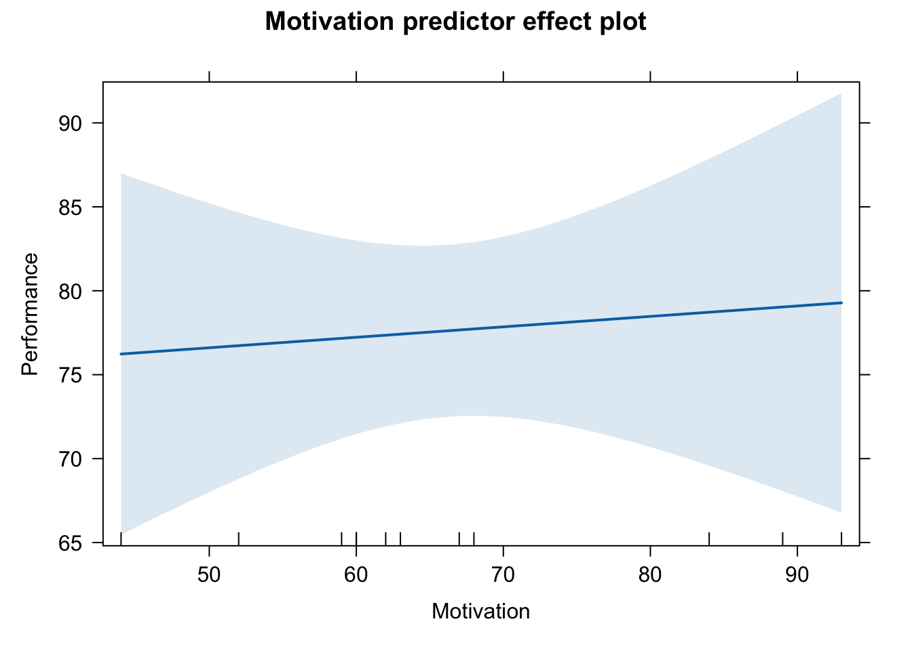
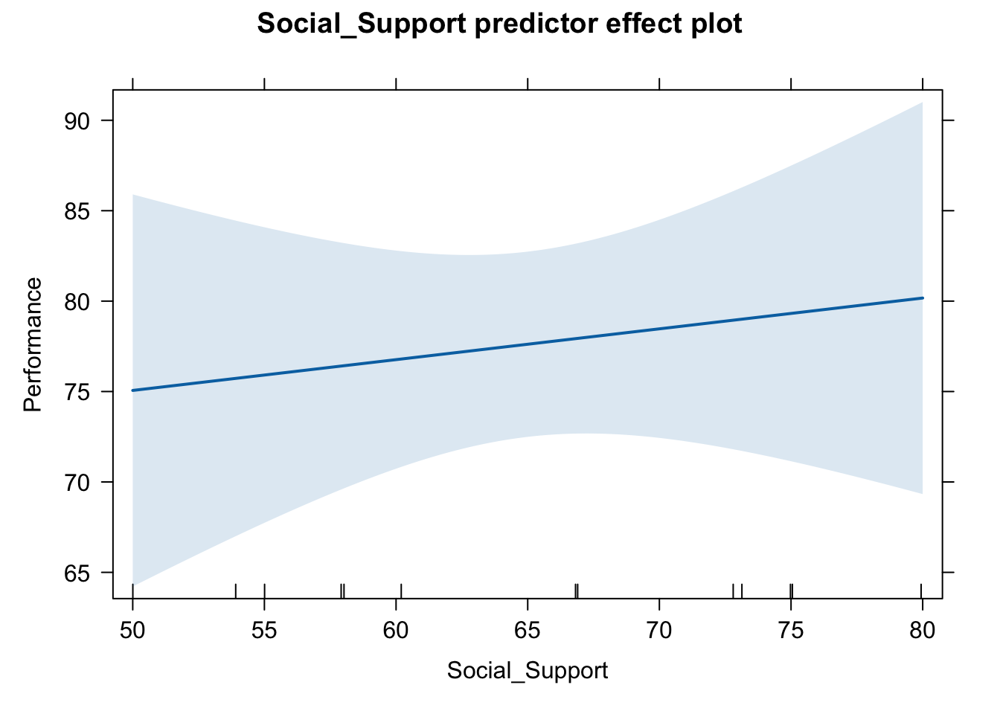
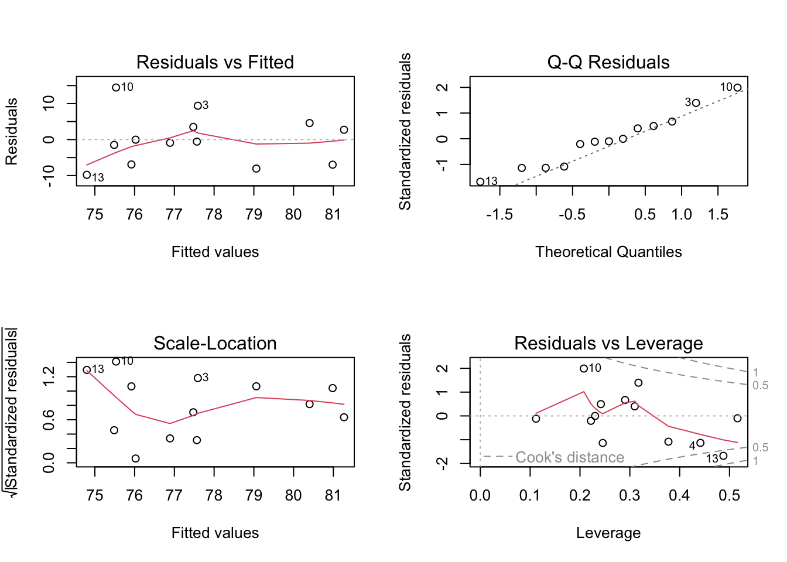

You were introduced to multiple regression in PSYC 122 and is an extension of simple regression. Now, we have more than one predictor variable for our outcome variable. We follow the same process as a simple regression, and test the variances explained by the model’s group of predictors with one \(F\) value in an “omnibus” test. This is unlike ANOVA where we can calculate an \(F\) value for each factor. For individual predictors and their significance on the outcome variable, we can calculate \(t\) values.
A multiple regression analysis finds the best possible set of values that predict values of the outcome variable given the observed values.
Model for simple regression
Remember the equation for simple regression:
\[
Y = b_0 + b_1*X+e
\] You may notice that the intercept term here is \(b_0\) where in the simple regression equation it was \(a\). They are equivalent, but I have noted the differences in convention here so that if you come across equations, you are aware that different people use different notation conventions. There is usually an explanation of the notation when it is first introduced - so read carefully and you should be ok.
Model for multiple regression
Now, the multiple regression equation simply adds further slope terms (extra \(b\)s) - one for each extra predictor variable
So a two predictor regression analysis equation becomes:
\(Y_i\) is the outcome variable - the values to be predicted. Sometimes called the criterion variable.
\(b_0\) is the intercept term;
In ANOVA terms \(b_0\) is the grand mean.
\(b_1\) and \(b_2\) are the beta weights or the slopes for change in \(Y\) when \(X_1\) and \(X_2\) change. You can see that the beta weights and x’s are paired by matching subscripts - each predictor gets its own beta weight.
the sign of \(b\) tells the direction of the effect - positive or negative
\(X_1\) and \(X_2\) are the predictor variables.
\(e_i\) is the error term, the distance of each data point from the line of best fit or the difference of the observed value of \(Y\) from the fitted / predicted value of \(Y\)
All the relations of the terms in the equation remain the same as with simple regression, there are literally just more predictors. There is a little more to the interpretation of an individual beta weight, in the context of its neighbouring predictors, from that of simple regression (explained later).
Longhand calculations for Multiple Regression - Oh wait! There are none!
You may be relieved to hear that the computation by hand becomes intractable at this point. We use the computer and functions to do the heavy lifting of model estimation and prediction for us.
Read in the data
This is a truncated set of values retrieved from Margriet’s first lecture last year. We used these to review correlation and simple regression. It makes sense to use them again, because we know the results of at least one of the predictors, so the addition of extra predictors may demonstrate that multiple regression is an extension of simple regression.
d <-read_csv("Covariance_Data.csv") # calling my dataframe d to save typing!
Rows: 13 Columns: 5
── Column specification ────────────────────────────────────────────────────────
Delimiter: ","
dbl (5): Participant_ID, Performance, IQ, Motivation, Social_Support
ℹ Use `spec()` to retrieve the full column specification for this data.
ℹ Specify the column types or set `show_col_types = FALSE` to quiet this message.
That is not to say that is all multiple regression is. There are practices that are needed with the presentation of more than one predictor but for now we will simple perform a regression with more than one predictor. The future lectures will visit these practices to fully inform the regression workflow.
We know some information about this dataset from looking at the first few rows, however, without a supporting article or a codebook, there is little to tell us about the driving research question or the hypothesis for this data. So we cannot know for sure what the primary variables are and what the supporting /auxiliary / third variables may be.
We need more than two variables to complete an example. We know from the simple regression performed earlier the IQ has very little relationship with Performance, so we could just go for it and add Motivation and Social_Support.
Performance can still be \(Y\), with all other variables acting as \(X\) predictors in this model.
Here is a repeat of the simple regression linear model command:
summary(m1 <-lm(Performance ~ IQ, d))
Call:
lm(formula = Performance ~ IQ, data = d)
Residuals:
Min 1Q Median 3Q Max
-12.281 -3.755 -1.439 6.363 12.363
Coefficients:
Estimate Std. Error t value Pr(>|t|)
(Intercept) 79.03336 17.87633 4.421 0.00103 **
IQ -0.01318 0.16492 -0.080 0.93775
---
Signif. codes: 0 '***' 0.001 '**' 0.01 '*' 0.05 '.' 0.1 ' ' 1
Residual standard error: 7.727 on 11 degrees of freedom
Multiple R-squared: 0.00058, Adjusted R-squared: -0.09028
F-statistic: 0.006384 on 1 and 11 DF, p-value: 0.9378
The multiple regression command is simply an addition of the other two predictor terms. I have called this m3 because it has three predictor terms (explained later).
m3 <-lm(Performance ~ IQ + Motivation + Social_Support, d)summary(m3)
Call:
lm(formula = Performance ~ IQ + Motivation + Social_Support,
data = d)
Residuals:
Min 1Q Median 3Q Max
-9.7971 -6.9194 -0.5667 3.5231 14.4673
Coefficients:
Estimate Std. Error t value Pr(>|t|)
(Intercept) 61.893215 27.601610 2.242 0.0516 .
IQ 0.004905 0.182974 0.027 0.9792
Motivation 0.062248 0.188307 0.331 0.7485
Social_Support 0.170331 0.281606 0.605 0.5602
---
Signif. codes: 0 '***' 0.001 '**' 0.01 '*' 0.05 '.' 0.1 ' ' 1
Residual standard error: 8.163 on 9 degrees of freedom
Multiple R-squared: 0.08722, Adjusted R-squared: -0.217
F-statistic: 0.2867 on 3 and 9 DF, p-value: 0.834
Let’s go through the summary output.
The Call of the model tells us the formula that we coded.
The Residuals give us some idea of whether we have a normal distribution of the error terms. Remember that a normal distribution is symmetric, which means that the min and max values should mirror each other, with the Min being negative and the max being positive. Here we have -9.79 for the Min values but 14.47 for the Max values. Maybe we have a problem with this assumption - we can check with some boxplots
The following two plots are identical in both visualisation and interpretation - except for the code used to call the residual values from the model object
boxplot(m3[['residuals']], # uses double brackets to identify the residuals from the model objectmain='Boxplot: Residuals (index code method)', # main title labelylab='residual value') # y axis label

boxplot(m3$residuals, # uses dollar sign to identify the residuals from the model objectmain='Boxplot: Residuals (variable name code method)', # main title labelylab='residual value') # y axis label

A shorter bottom whisker and a longer top whisker indicated a skewed distribution, which is indicative of a non-symettric distribution.
The Coefficients block: The columns:
the first column is the coefficient labels
the estimate column is the magnitude of the coefficient - all positive here but could also be negative, denoting the direction of the effect.
It may be tempting to think that Social_Support is a stronger predictor than the other predictors given its magnitude but remember that the units here for each predictor are on different scales (that we have no information about either). We need to standardise the predictors if we are to be able to make such comparisons (explained later).
the standard error column gives us a precision of the measurement
t value column - obtained by dividing the coefficient by the standard error, and under the null hypothesis that each beta value = 0. This is a t value with \(n - p - 1\) degrees of freedom (\(n\) = number of observations, and \(p\) is the number of parameters).
p value for a two tailed t statistic (more about this later).
Key for any asterisks that indicate statistical significance on the t values
First, lets take a look at the difference of the intercept and IQ coefficient between the simple regression model and the multiple regression model. The intercept and IQ beta coefficients from the simple regression have changed in the context of a larger set of predictors:
the intercept term is smaller in m3, compared to m1 (61.89 vs 79.03)
the IQ predictor is now positive (it was negative) but is of a smaller magnitude. The interpretation of this predictor, given its magnitude, is probably the same in m3 as m1. A one unit increase in IQ indicates a 0.005 increase in Performance Scores, holding Motivation and Social_Support predictors at a constant level. The t-value and associated p value remain non-significant.
The added predictors of Motivation and Social_Support
Motivation looks to have a positive relationship with Performance. A one unit increase in Motivation indicates a 0.06 unit increase in Performance Scores, holding IQ and Social_Support predictors at a constant level. It is, however, non-significant.
Social_Support also looks to have a positive relationship with Performance. A one unit increase in Social_Support indicates a 0.17 increase in Performance, holding IQ and Motivation predictors at a constant level. It is also non-significant.
Interpretation of the model
Lets reprint the summary to save scrolling but also save the summary to an object so that we can call the values while interpreting and reporting the model
(m3_sum <-summary(m3))
Call:
lm(formula = Performance ~ IQ + Motivation + Social_Support,
data = d)
Residuals:
Min 1Q Median 3Q Max
-9.7971 -6.9194 -0.5667 3.5231 14.4673
Coefficients:
Estimate Std. Error t value Pr(>|t|)
(Intercept) 61.893215 27.601610 2.242 0.0516 .
IQ 0.004905 0.182974 0.027 0.9792
Motivation 0.062248 0.188307 0.331 0.7485
Social_Support 0.170331 0.281606 0.605 0.5602
---
Signif. codes: 0 '***' 0.001 '**' 0.01 '*' 0.05 '.' 0.1 ' ' 1
Residual standard error: 8.163 on 9 degrees of freedom
Multiple R-squared: 0.08722, Adjusted R-squared: -0.217
F-statistic: 0.2867 on 3 and 9 DF, p-value: 0.834
When the \(F_b\) is not significant then \(b\) = 0 may be true. The data do not demonstrate any tendency for larger values of \(X\) to be associated with smaller or larger values of \(Y\).
None of the predictors show any significant ability to predict variance in Job Performance (IQ: t = 0.03, p = 0.98; Motivation: t = 0.33, p = 0.75 and Social Support: t = 0.6, p = 0.56). For this sample, the predictors and the job performance appear to be causally unrelated.
The model is not significant either (\(F{_(}{_3,_9}{_)}\) = 0.29, p = 0.834). \(F_{critical}\) for df = (3, 9) at the .05 level = 3.86. This means that \(F_{observed}\) is not larger than \(F_{critical}\) so we fail to reject the null hypothesis.
Plotting predictions
Plotting an individual effect (or lack of it) is very simple if we are not too worried about being pretty.
plot(predictorEffect("IQ", m3))

plot(predictorEffect("Motivation", m3))

plot(predictorEffect("Social_Support", m3))

Plotting it in this way, also allows us, with a simple additional argument to the plot call, to see the partial residuals - thereby checking that we have residual values that are normally distributed - I think the pink line probably tells us that we do not! We should be looking for an alternative way to analyse these two variables….or some transformations!
Checking that assumptions of linear regression are not violated
Every regression model is built upon the following assumptions:
The relationship between \(X\) and \(Y\) is assumed to be linear (additive)
The residual errors are normally distributed
The residuals have constant variance (homoscedasticity)
The residuals are not correlated (assumption of independence)
par(mfrow =c(2, 2)) # display plots in a 2 x 2 panelplot(m3) # plot diagnostic plots for m3

Residuals vs Fitted: “fitted” here means the predicted values. We want the pink line to align pretty closely with the horizontal dashed line. Comparing this plot with that from the simple regression, this plot looks better. Take note of observation 13 - that was also labelled in the simple regression plots.
Normal Q-Q: If the residual points (open circles) follow the dashed line, you can assume the residuals are normally distributed
Scale-Location: This is checking for constant variance in the residuals - not much here. A good indication would be a horizontal pink line with equally spread points. Our graph is not good.
Residuals vs Leverage - are there any points that are having a large influence on the regression results. They will be numbered and you can then inspect them in your data file. Observations that show standardised residuals (see the table above) above 3 would be problematic. As would observations of a hat value above \(2(p+1)/n\) where \(p\) = is the number of predictors and \(n\) = is the number of observations
p <-3N <-nrow(d)(m3_hat <- (2*(p+1))/N) # model hat value
[1] 0.6153846
And we can collect some diagnostic measures for each data point to help with assumption checking using the augment() function from the broom package:
m3_metrics <-augment(m3)print.data.frame(m3_metrics) # this code makes all the columns in the tibble print out at once; it isn't pretty but it works for our purposes
Columns 1 - 4 are our variables. fitted and residuals are the predicted values of Y and the error values. The .hat and .cooksd columns we use below with some explanation.
Looking down the .hat column, and comparing it to the model hat value of 0.62, none of the datapoints above have hat values larger than the model hat threshold value.
Checking for observations that are influential follows a similar pattern: observations that exceed the Cook’s distance value = \(4/(n-p-1)\) are likely to have high influence and the regression results may change if you exclude them. In the presence of such observations that exceed Cook’s distance, unless you know the observation are errors, you probably need to estimate the model without the observations and report both sets of results.
(m3_Cooks <-4/(N-p-1)) # model Cook's distance value
[1] 0.4444444
Looking down the .cooksd column, and comparing it to the model Cooks Distance value of 0.44, observation no. 13 is looking influential. Remember the skewed distribution of the residuals with the long whisker… Time to inspect, possibly exclude 13 and rerun! As before however, the major problem here is small sample size.
Reporting Relationships between the predictors, the descriptive statistics and the inferential statistics for your model
Hopefully by now, you realise that writing your results section is quite formulaic. A results section comprises some descriptive statistics and inferential statistics. Descriptive statistics are number of observations and means and SDs of the variables - the same as any analysis method. The inferential statistics are reported at the model and predictor level. Because there are only three predictors in this model, you could present the descriptive statistics in the text with the predictor statistics.
In multiple regression, you may also want to present the relationships between the predictor variables as part of your results section. This is informative, as high correlations between predictor variables can suggest different modelling strategies, such as variable selection or factor analysis (see week 15).
Correlation Coeffiecients
# some preparation needed for a correlation matrix# remove the participant ID columnd_cor <- d %>%select(-Participant_ID)res.cor <-correlate(d_cor, diagonal =1)
# A tibble: 4 × 5
term Performance IQ Motivation Social_Support
<chr> <dbl> <dbl> <dbl> <dbl>
1 Performance 1 NA NA NA
2 IQ -0.0241 1 NA NA
3 Motivation 0.219 0.111 1 NA
4 Social_Support 0.274 -0.208 0.436 1
This is a table of pairs of correlations. It shows how one predictor is associated with another predictor in the model. The first column is the row labels. From the second column onward, we see Pearson’s r correlations. The Performance column shows the correlation of each predictor with the outcome variable. If you recall, the simple correlation between IQ and Performance was -0.02. Here you see that when paired with Performance, Motivation and Social-Support seem to share much more variance with Performance - however when modelled together, neither of them show such strength, nor are they significant predictors.
In the final three columns, we see the correlational relationships that exist between pairs of predictors. Look at Motivation and Social Support - their relationship is positive, as one increases so does the other, and quite strong. Look at the relationship between IQ and Social Support: negative, as one increases the other decreases.
Above is the tibble; reporting standards are better approximated by going a little further.
kable(res.cor2, booktabs = T, digits =2)
term
Performance
IQ
Motivation
Social_Support
Performance
1.00
NA
NA
NA
IQ
-0.02
1.00
NA
NA
Motivation
0.22
0.11
1.00
NA
Social_Support
0.27
-0.21
0.44
1
Descriptive and Inferential Statistics - Example Results Section Paragraphs
We performed a multiple regression model with Job Performance Scores as our outcome variable and IQ, Motivation and Social Support as predictor variables. The bivariate correlation relationships for all variables in shown in table 1. The model was non-significant (F(3, 9) = 0.29, p = .834) and explained 0% of the variance on Job Performance Scores. IQ (mean = 107.6, SD = 13.5) was a non-significant predictor for Job Performance (b = 0.005, t = 0.03, p = .98), as was Motivation (mean = 66.2, SD = 14.3,b = 0.06, t = 0.33, p = .75), and Social Support (mean = 65, SD = 9.7,b = 0.17, t = 0.61, p = .56). Since neither the model nor any of the predictors were significant, we do not present any effects plots here.
Going Forward
There are lots of things to do as we run a multiple regression model - both before, while and after building the model, which will be the focus of the future lectures. We need to look at:
a model with some significant predictors!
models with categorical and ordinal predictors
interpreting models with the same
alternative versions of correlation matrices
centering & standardising predictors for interpretation
models with interaction terms
models of mediated relationships
managing multicollinearity
choosing between different models
reducing the number of variables while keeping the useful statistical information in the data
Your pre-lab activity is running through these three markdown documents for Correlation, Simple Regression and Multiple Regression review and testing your understanding with the WBA 1 Quiz. The Quiz runs through all the theory behind correlation and regression and is explicitly designed to make you agile with the r code. For some of you it will be intensely frustrating. Like all data analysis, start early and walk away from it when you are at your limit, returning to do a little more later on.